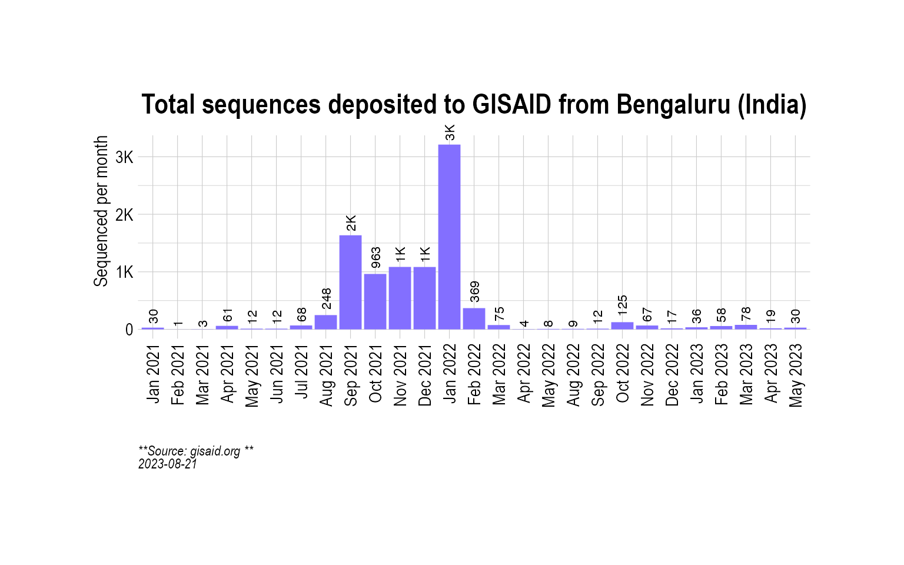
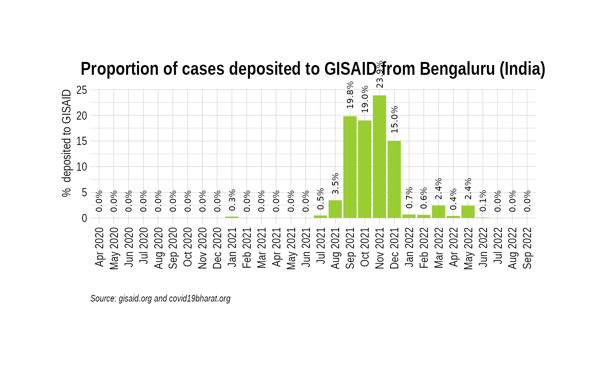
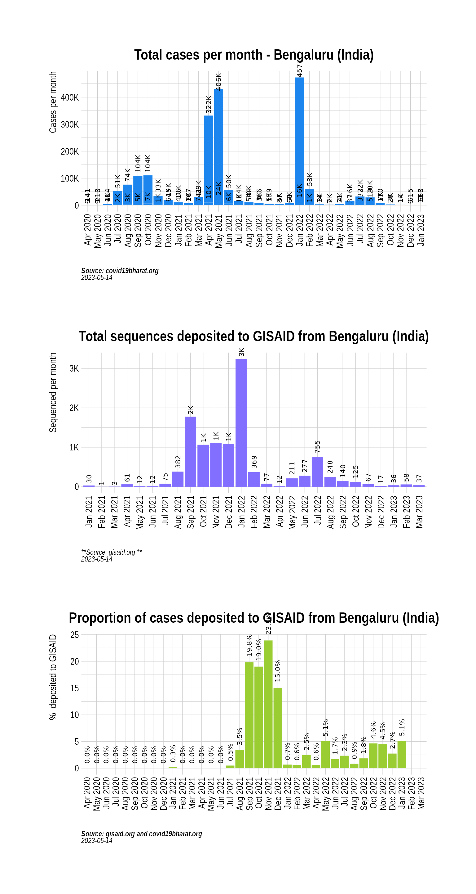
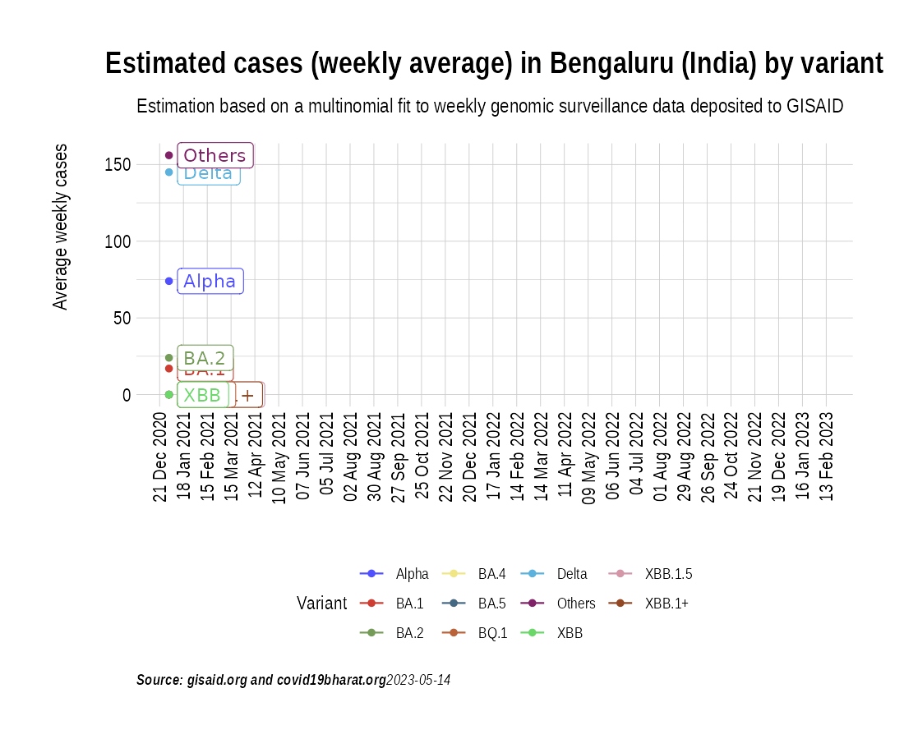
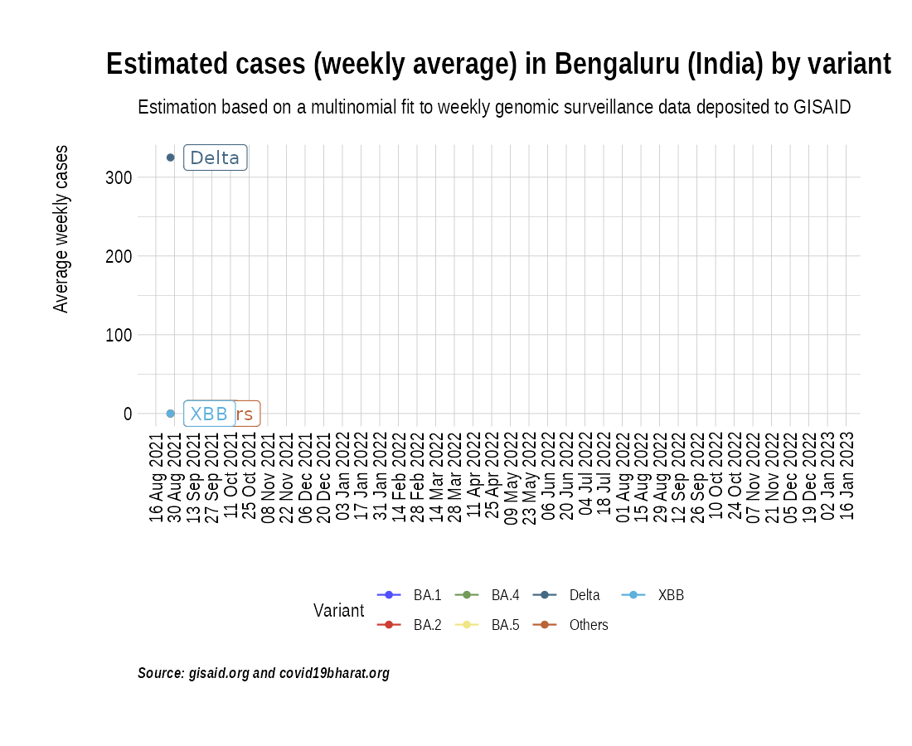
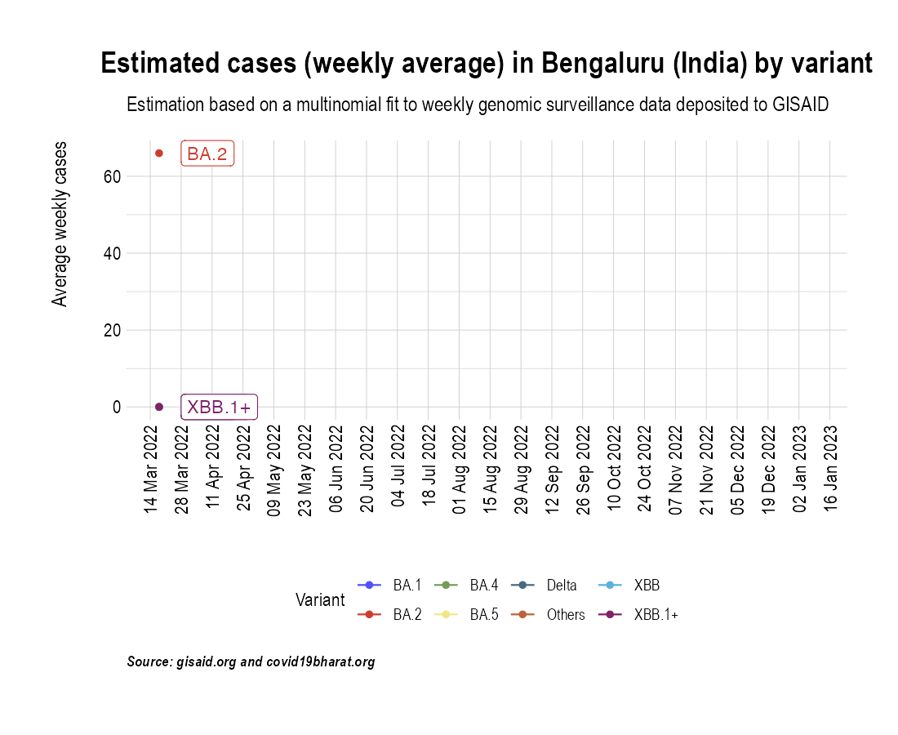

Animation of projected weekly cases - Bengaluru (India)
Source:vignettes/VariantAnimation-Bengaluru.Rmd
VariantAnimation-Bengaluru.Rmd
suppressPackageStartupMessages({
library(covmuller)
library(tidyverse)
})
theme_set(CovmullerTheme())Get variants data for India
gisaid_metadata <- qs::qread("~/data/epicov/metadata_tsv_2023_05_27.qs")
gisaid_india <- FilterGISAIDIndia(gisaid_metadata_all = gisaid_metadata)
vocs <- GetVOCs()
omicron <- vocs[["omicron"]]
vocs[["omicron"]] <- NULL
custom_voc_mapping <- list(
`BA.1` = "BA.1",
`BA.1.*` = "BA.1",
`BA.2` = "BA.2",
`BA.2.*` = "BA.2",
`BA.3` = "BA.3",
`BA.3.*` = "BA.3",
`BA.4` = "BA.4",
`BA.4.*` = "BA.4",
`BA.5` = "BA.5",
`BA.5.*` = "BA.5",
`XBB` = "XBB",
`XBB.1` = "XBB.1+",
`XBB.1.*` = "XBB.1+",
`XBB.1.5` = "XBB.1.5",
`BQ.1` = "BQ.1",
`BQ.1.*` = "BQ.1"
)
gisaid_india <- gisaid_india %>%
filter(pangolin_lineage != "None") %>%
filter(pangolin_lineage != "Unassigned")
gisaid_india$District <- stringr::str_to_title(gisaid_india$District)
gisaid_india$City <- stringr::str_to_title(gisaid_india$City)
gisaid_india$custom_city <- gisaid_india$City
gisaid_india$custom_city[gisaid_india$custom_city == ""] <- gisaid_india$District[gisaid_india$custom_city == ""]
gisaid_india$custom_city <- stringr::str_to_title(gisaid_india$custom_city)
gisaid_india <- CollapseLineageToVOCs(
variant_df = gisaid_india,
vocs = vocs,
custom_voc_mapping = custom_voc_mapping,
summarize = FALSE
)Get monthly cases for Bengaluru
Bengaluru_monthly_cases <- GetIndiaConfirmedCasesMonthlyLong(level = "district") %>% filter(District %in% c("Bengaluru Urban", "Bengaluru Rural"))
head(Bengaluru_monthly_cases)## # A tibble: 6 × 4
## # Groups: MonthYear, State [3]
## MonthYear State District value
## <yearmon> <chr> <chr> <dbl>
## 1 Apr 2020 Karnataka Bengaluru Rural 6
## 2 Apr 2020 Karnataka Bengaluru Urban 141
## 3 May 2020 Karnataka Bengaluru Rural 9
## 4 May 2020 Karnataka Bengaluru Urban 218
## 5 Jun 2020 Karnataka Bengaluru Rural 114
## 6 Jun 2020 Karnataka Bengaluru Urban 4196Get weekly cases for Bengaluru
Bengaluru_seq_stats <- TotalSequencesPerMonthCountrywise(gisaid_india %>% filter(custom_city == "Bengaluru"), rename_country_as_state = TRUE)
p2 <- BarPlot(Bengaluru_seq_stats, ylabel = "Sequenced per month", color = "slateblue1", label_si = TRUE, title = "Total sequences deposited to GISAID from Bengaluru (India)", caption = "**Source: gisaid.org **<br>")
p2
Overall, how much has Bengaluru sequenced over months?
While the absolute numbers are informative, a more useful metric is the proportion of cases (cases sequenced over total cases) that are getting sequenced. Here we look at the proportion of cases that have been sequenced in India over the course of the pandemic:
Bengaluru_monthly_cases_tmp <- Bengaluru_monthly_cases %>% select(MonthYear, value)
Bengaluru_monthly_cases_tmp$State <- "India"
Bengaluru_monthly_cases_tmp$type <- "Confirmed"
Bengaluru_monthly_cases_tmp <- Bengaluru_monthly_cases_tmp %>%
group_by(MonthYear, State, type) %>%
summarise(value = sum(value))
Bengaluru_monthly_cases_tmp <- Bengaluru_monthly_cases_tmp %>% select(MonthYear, State, value, type)
sequencing_proportion <- CombineSequencedCases(
cases_sequenced = Bengaluru_seq_stats,
confirmed_long = Bengaluru_monthly_cases_tmp
)
p3 <- BarPlot(sequencing_proportion, yaxis = "percent_sequenced_collected", ylabel = "% deposited to GISAID", color = "yellowgreen", title = "Proportion of cases deposited to GISAID from Bengaluru (India)", caption = "**Source: gisaid.org and covid19bharat.org**<br>")
p3
p1 / p2 / p3
Project weekly cases to variant prevalence data from GISAID
confirmed_subset_dateweekwise_long <- GetIndiaConfirmedCasesWeeklyLong(level = "district")
gisaid_dist_weekwise <- SummarizeVariantsWeekwise(gisaid_india %>% filter(custom_city == "Bengaluru") %>% arrange(WeekYearCollected))
confirmed_subset_dateweekwise_long_dist <- confirmed_subset_dateweekwise_long %>%
filter(District %in% c("Bengaluru Urban", "Bengaluru Rural")) %>%
rename(n = value) %>%
rename(WeekYearCollected = WeekYear) %>%
dplyr::select(-contains("type")) %>%
filter(WeekYearCollected >= min(gisaid_dist_weekwise$WeekYearCollected))
confirmed_subset_dateweekwise_long_dist$State <- NULL
voc_to_keep <- gisaid_dist_weekwise %>%
group_by(lineage_collapsed) %>%
summarise(n_sum = sum(n)) %>%
filter(n_sum > 1) %>%
pull(lineage_collapsed) %>%
unique()
gisaid_dist_weekwise <- gisaid_dist_weekwise %>% filter(lineage_collapsed %in% voc_to_keep)
india_cases_pred_prob_sel_long <- FitMultinomWeekly(gisaid_dist_weekwise, confirmed_subset_dateweekwise_long_dist)## # weights: 44 (30 variable)
## initial value 27196.928184
## iter 10 value 10529.383161
## iter 20 value 6151.503827
## iter 30 value 5632.937922
## iter 40 value 5370.433292
## iter 50 value 5250.571533
## iter 60 value 5101.122238
## iter 70 value 4890.895503
## iter 80 value 4776.099551
## iter 90 value 4698.012395
## iter 100 value 4687.495553
## iter 110 value 4657.317410
## iter 120 value 4651.969871
## final value 4651.472471
## converged
the_anim <- PlotVariantPrevalenceAnimated(india_cases_pred_prob_sel_long, title = "Estimated cases (weekly average) in Bengaluru (India) by variant", caption = "**Source: gisaid.org and covid19bharat.org**", date_breaks = "28 days")
gganimate::anim_save(filename = here::here("docs/articles/Bengaluru_animated.gif"), animation = the_anim)
Look at cases after January, 2022 only:
confirmed_subset_dateweekwise_long <- GetIndiaConfirmedCasesWeeklyLong(level = "district")
confirmed_subset_dateweekwise_long <- confirmed_subset_dateweekwise_long %>%
filter(WeekYear >= tsibble::yearweek("2021 W35")) %>%
filter(District %in% c("Bengaluru Urban", "Bengaluru Rural")) %>%
group_by(WeekYear) %>%
summarise(n = sum(value)) %>%
arrange(WeekYear) %>%
rename(WeekYearCollected = WeekYear)
gisaid_dist <- gisaid_india %>%
filter(MonthYearCollected > "Dec 2021") %>%
filter(custom_city == "Bengaluru") %>%
arrange(WeekYearCollected)
gisaid_weekwise <- SummarizeVariantsWeekwise(gisaid_dist)
voc_to_keep <- gisaid_weekwise %>%
group_by(lineage_collapsed) %>%
summarise(n_sum = sum(n)) %>%
filter(n_sum > 1) %>%
pull(lineage_collapsed) %>%
unique()
gisaid_weekwise <- gisaid_weekwise %>% filter(lineage_collapsed %in% voc_to_keep)
cases_pred_prob_sel_long <- FitMultinomWeekly(gisaid_weekwise, confirmed_subset_dateweekwise_long)## # weights: 40 (27 variable)
## initial value 13179.997072
## iter 10 value 4026.027150
## iter 20 value 3419.968125
## iter 30 value 3359.834657
## iter 40 value 3327.897592
## iter 50 value 3314.080307
## iter 60 value 3309.027154
## iter 70 value 3308.105918
## iter 80 value 3307.249739
## iter 90 value 3305.816291
## iter 100 value 3302.008696
## iter 110 value 3299.903462
## iter 120 value 3299.788564
## iter 130 value 3299.590303
## iter 140 value 3299.504435
## iter 150 value 3299.449062
## iter 160 value 3299.272661
## final value 3299.032008
## converged
the_anim <- PlotVariantPrevalenceAnimated(cases_pred_prob_sel_long, title = "Estimated cases (weekly average) in Bengaluru (India) by variant", caption = "**Source: gisaid.org and covid19bharat.org**<br>")## `geom_line()`: Each group consists of only one observation.
## ℹ Do you need to adjust the group aesthetic?
## `geom_line()`: Each group consists of only one observation.
## ℹ Do you need to adjust the group aesthetic?
gganimate::anim_save(filename = here::here("docs/articles/Bengaluru_animated_2021.gif"), animation = the_anim)
Look at cases in the last few weeks:
confirmed_subset_dateweekwise_long <- GetIndiaConfirmedCasesWeeklyLong(level = "district")
confirmed_subset_dateweekwise_long <- confirmed_subset_dateweekwise_long %>%
filter(WeekYear >= tsibble::yearweek("2022 W12")) %>%
filter(District %in% c("Bengaluru Urban", "Bengaluru Rural")) %>%
group_by(WeekYear) %>%
summarise(n = sum(value)) %>%
arrange(WeekYear) %>%
rename(WeekYearCollected = WeekYear)
gisaid_dist <- gisaid_india %>%
filter(MonthYearCollected > "Dec 2021") %>%
filter(custom_city == "Bengaluru") %>%
arrange(WeekYearCollected)
gisaid_weekwise <- SummarizeVariantsWeekwise(gisaid_dist)
voc_to_keep <- gisaid_weekwise %>%
group_by(lineage_collapsed) %>%
summarise(n_sum = sum(n)) %>%
filter(n_sum > 1) %>%
pull(lineage_collapsed) %>%
unique()
gisaid_weekwise <- gisaid_weekwise %>% filter(lineage_collapsed %in% voc_to_keep)
cases_pred_prob_sel_long <- FitMultinomWeekly(gisaid_weekwise, confirmed_subset_dateweekwise_long)## # weights: 40 (27 variable)
## initial value 13179.997072
## iter 10 value 4026.027150
## iter 20 value 3419.968125
## iter 30 value 3359.834657
## iter 40 value 3327.897592
## iter 50 value 3314.080307
## iter 60 value 3309.027154
## iter 70 value 3308.105918
## iter 80 value 3307.249739
## iter 90 value 3305.816291
## iter 100 value 3302.008696
## iter 110 value 3299.903462
## iter 120 value 3299.788564
## iter 130 value 3299.590303
## iter 140 value 3299.504435
## iter 150 value 3299.449062
## iter 160 value 3299.272661
## final value 3299.032008
## converged
the_anim <- PlotVariantPrevalenceAnimated(cases_pred_prob_sel_long, title = "Estimated cases (weekly average) in Bengaluru (India) by variant", caption = "**Source: gisaid.org and covid19bharat.org**<br>")## `geom_line()`: Each group consists of only one observation.
## ℹ Do you need to adjust the group aesthetic?
## `geom_line()`: Each group consists of only one observation.
## ℹ Do you need to adjust the group aesthetic?
gganimate::anim_save(filename = here::here("docs/articles/Bengaluru_animated_2022.gif"), animation = the_anim)